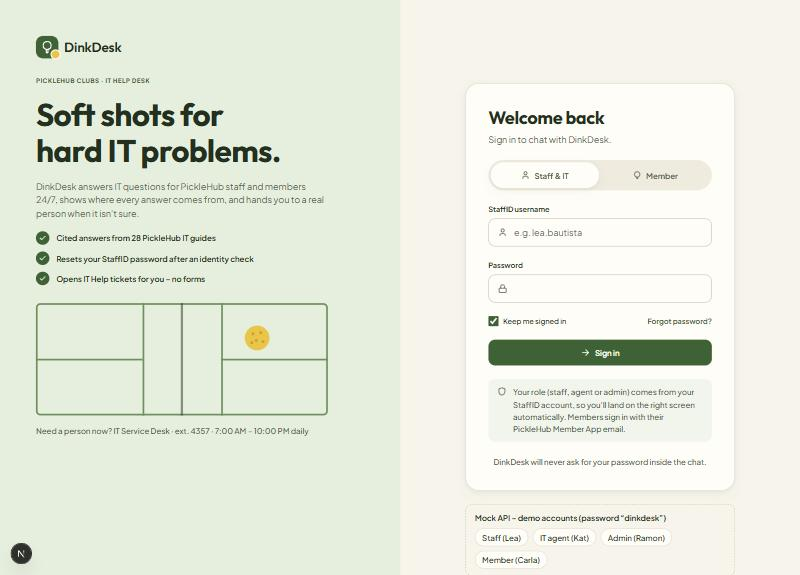
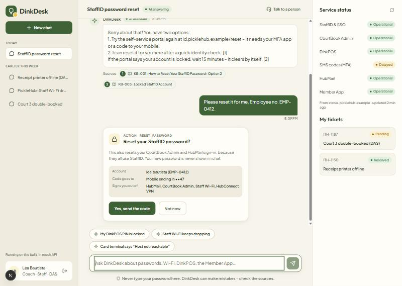
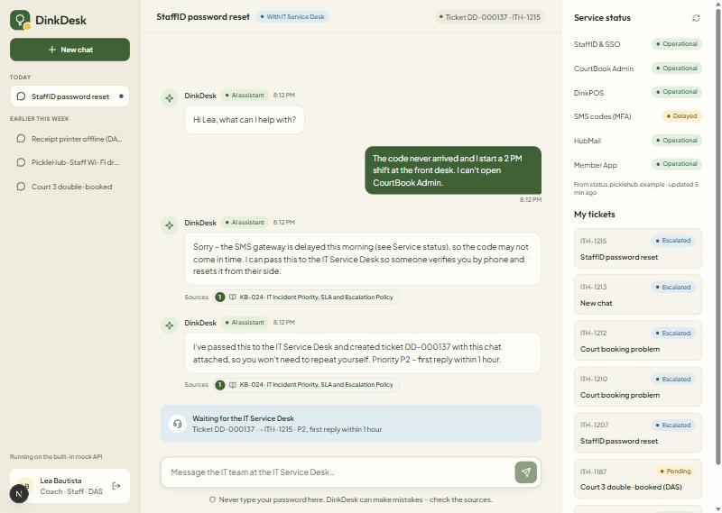
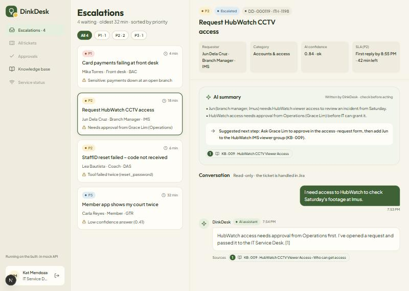
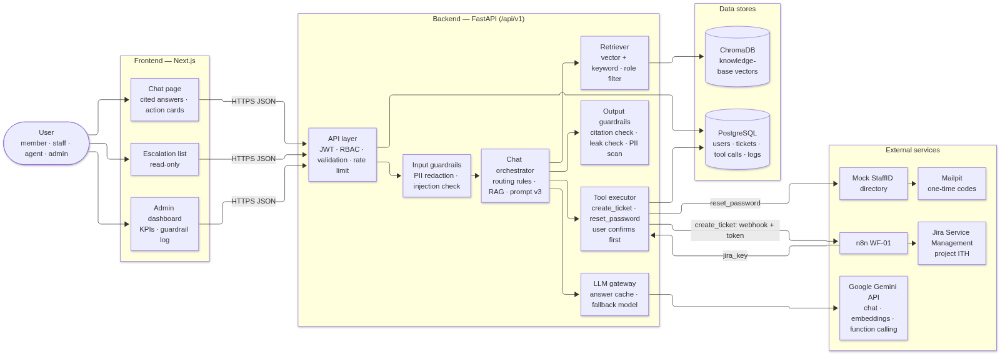

S-ITPE006 Capstone · De La Salle University–Dasmariñas · 2026
An AI helpdesk for PickleHub Clubs that answers IT questions, takes action, and knows when to hand over to a person.
A 3-minute 48-second walkthrough of the running system: a cited answer, a blocked prompt-injection attempt, a ticket created in DinkDesk and Jira, a password reset with a one-time code, a security incident handed to IT, and the IT agent and administrator screens.
PickleHub's IT help runs on messages, calls and walk-ups. Password resets, Wi-Fi and card-terminal errors are answered one at a time, again and again.
The five clubs are busiest in the evenings and on weekends, exactly when the IT team is least available.
Management cannot see how many requests arrive, how long they take, or which systems fail most.
PickleHub Clubs is a fictional chain of pickleball clubs in Cavite, written by the team as the business setting for this project.
From 28 PickleHub IT guides, with a citation for every answer.
Resets a StaffID password and opens a Jira ticket, always after the user confirms.
Security, privacy and uncertain cases go to a human IT agent.
Role-based access, personal-data redaction and prompt-injection guardrails.





When confidence is low, the model is not called at all and the user is offered a ticket or an IT agent. Tickets are saved in DinkDesk first and then sent through an n8n workflow to Jira, so a Jira outage never loses a ticket.
Measured on a golden set of 50 questions covering normal, vague, off-topic, malicious, personal-data, low-confidence and action requests.
Target 85%. The first prompt scored 64%.
On prompt-injection and off-topic questions.
Retrieval hit rate.
Target 6 s. Started at 12.3 s.
Load test: 20 users for 3 minutes, 980 requests, 0 failures. 361 unit tests run in GitHub Actions on every pull request.
| Frontend | Next.js, React, TypeScript, Tailwind CSS |
|---|---|
| Backend | Python, FastAPI, LangChain |
| AI | Google Gemini: chat, embeddings and function calling |
| Data | PostgreSQL, ChromaDB |
| Automation | n8n, Jira Service Management |
| DevOps and testing | Docker Compose, GitHub Actions, pytest, Locust |
| Design | Figma |
Project lead
AI/RAG pipeline, prompts and guardrails, DevOps, frontend development.
Backend & automation
FastAPI and PostgreSQL, function calling, n8n and Jira, QA and evaluation.
UI/UX design
Figma design of every screen and user-interface testing.
UI/UX design support
Figma design and user-interface testing, screenshots for the user manual.
Instructor: Mr. Ansbert F. Gregana · College of Information and Computer Studies, De La Salle University–Dasmariñas.
Interface preview (no keys needed, sample data). Needs Node.js 20 or later:
git clone https://github.com/jopintor/dinkledoodldesk.git cd dinkledoodldesk/frontend npm install npm run dev
Then open http://localhost:3000 and use the demo-account buttons on the sign-in page.
The complete system with the real AI needs Docker Desktop and a free Gemini API key. The step-by-step guide is in the README.